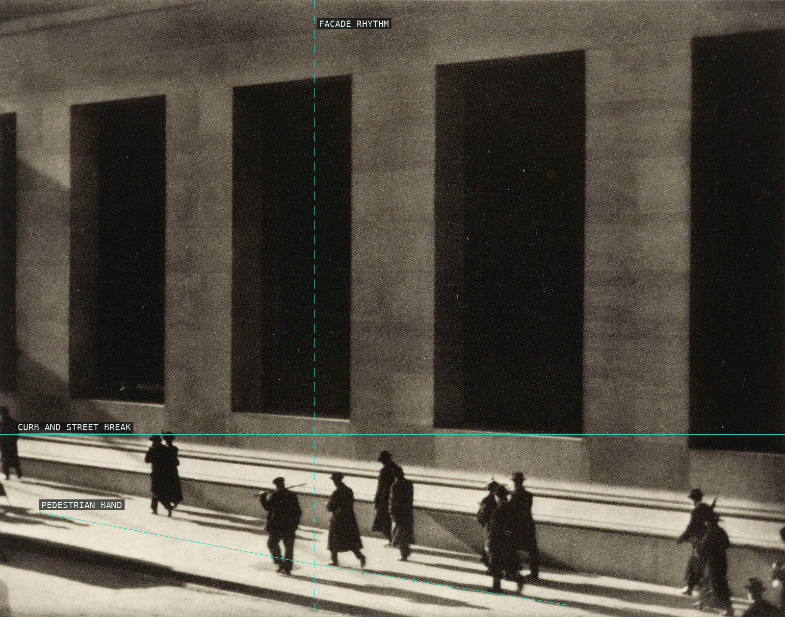
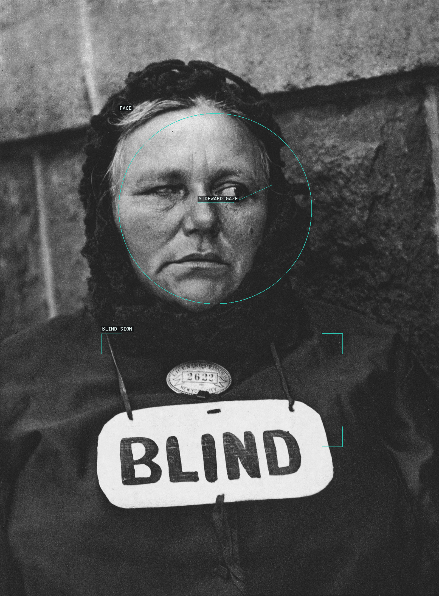
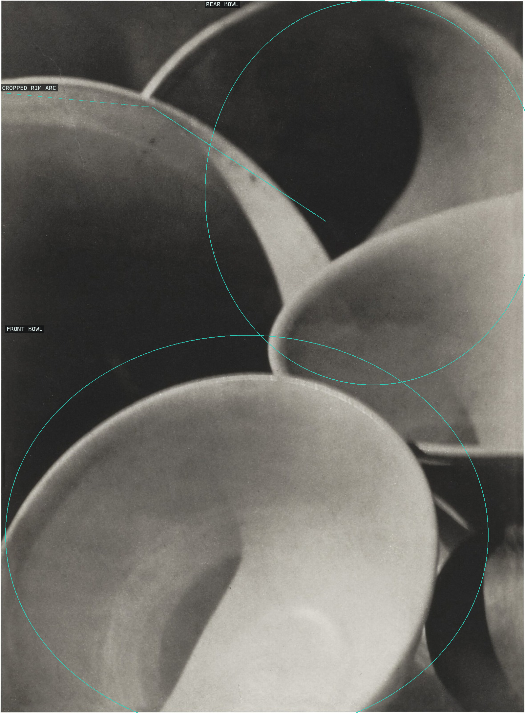
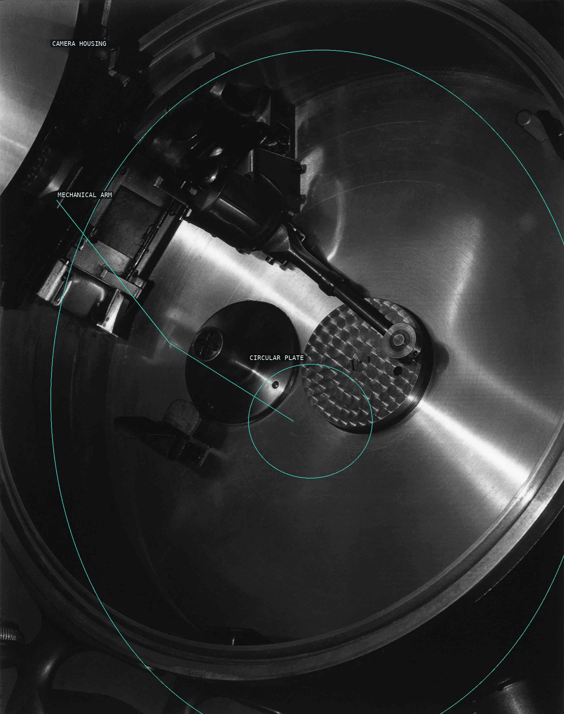
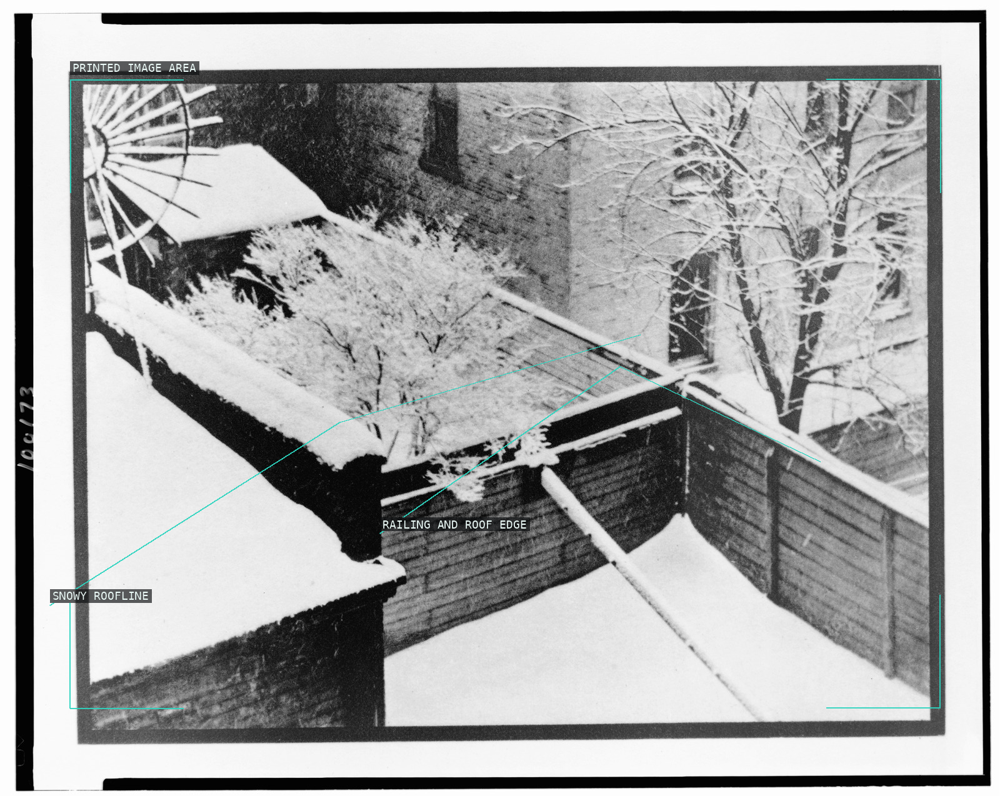
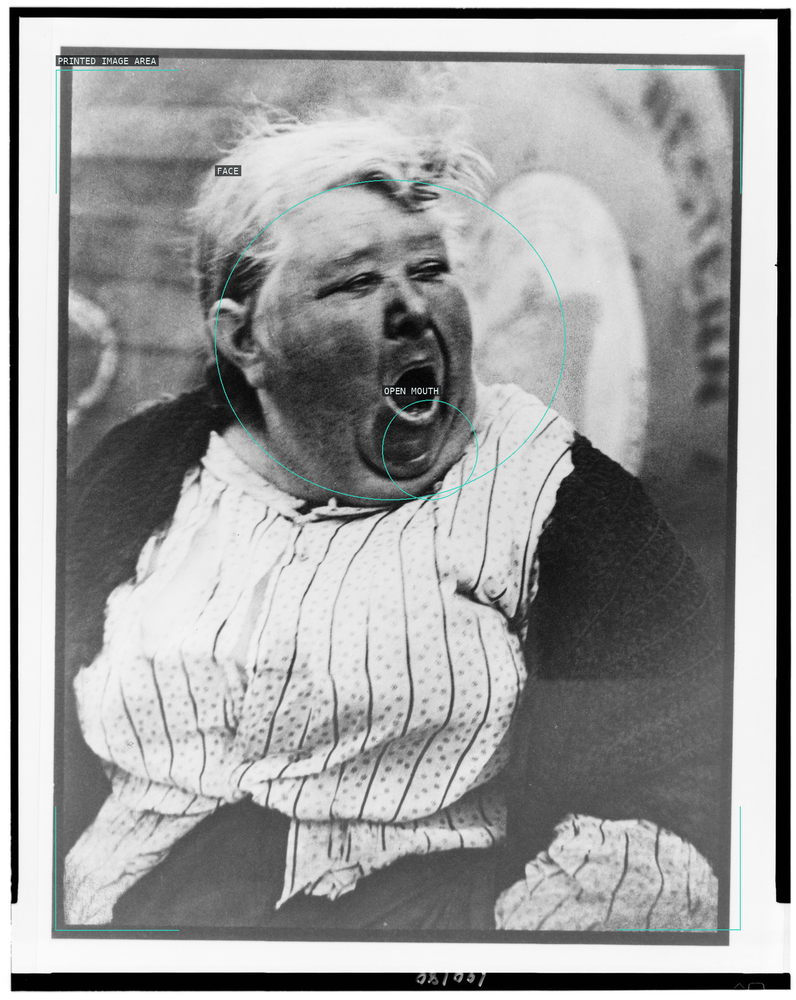
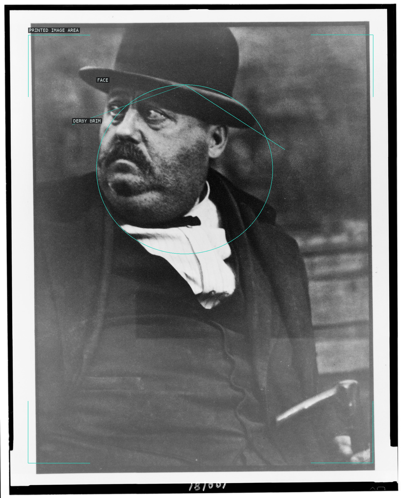
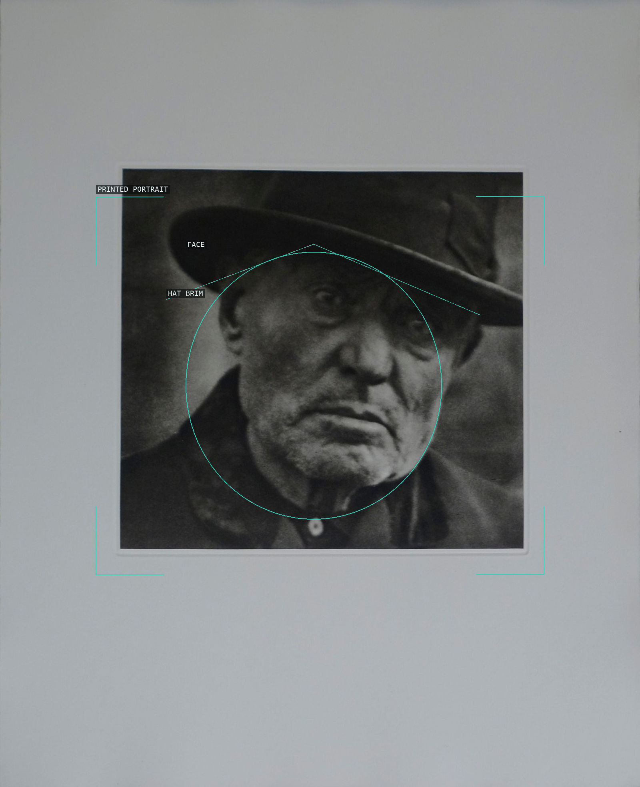
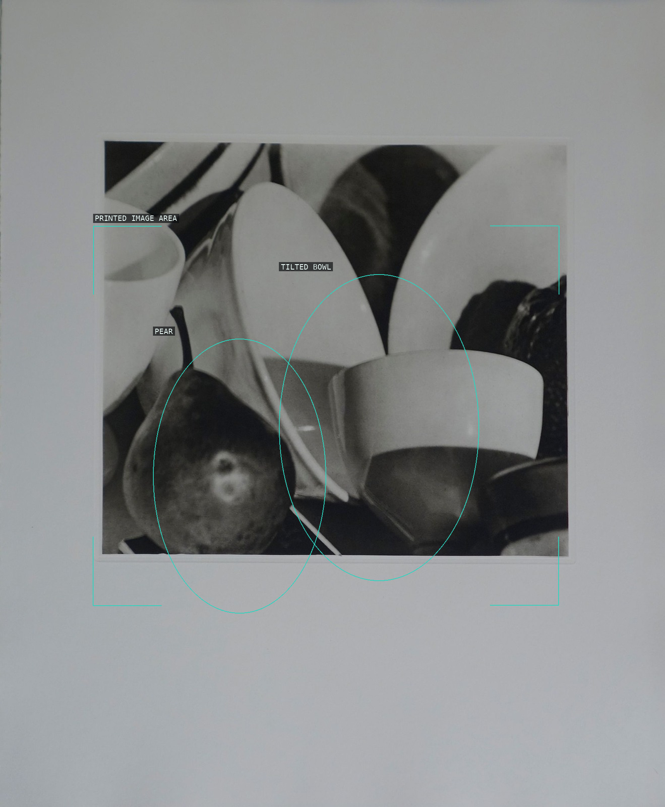

Facade bays, curb, and pedestrian band.

Face, sign, and averted gaze.

Overlapping cropped bowl rims.

Railing shadows across a curved porch plane.

Circular housing, plate, and mechanical arm.

Snowy rooflines and railings within the reproduced print.

Cropped face and open mouth.

Derby brim and face against scarf and coat.

Face and hat brim within the small printed portrait.

Pear and tilted bowl within a reproduced print.